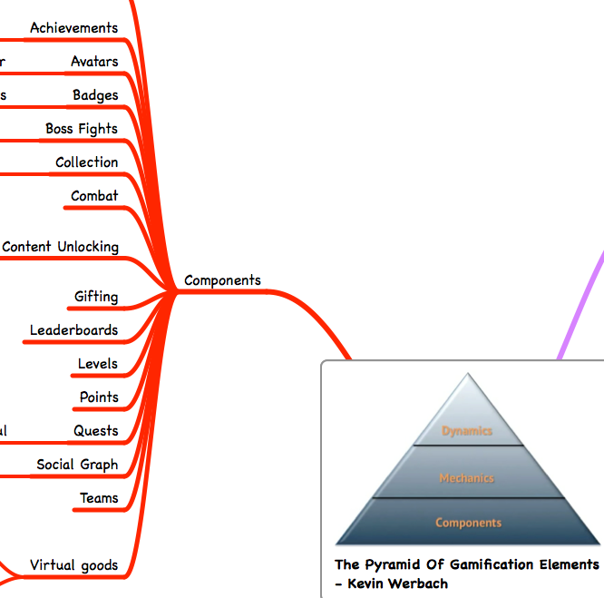

Designers get players to play and keep them playing
3-2 Player journey
Onboarding: get into the game easily
Scaffolding: guide the player to learn the game
Path to mastery
3-3 Game Design and Fun
Types of fun: easy, hard, people, serious
Fun has to be designed
## Boss: Pyramid of Gamification Elements

Boss: Game Components

Bonus Stage
Could you achieve your project's objective
by turning your users into players?
## References
[Gamification Coursera Course](https://www.coursera.org/course/gamification) by Kevin Werbach
[For the Win: How Game Thinking Can Revolutionize Your Business](http://wdp.wharton.upenn.edu/books/for-the-win/) by Kevin Werbach and Dan Hunter